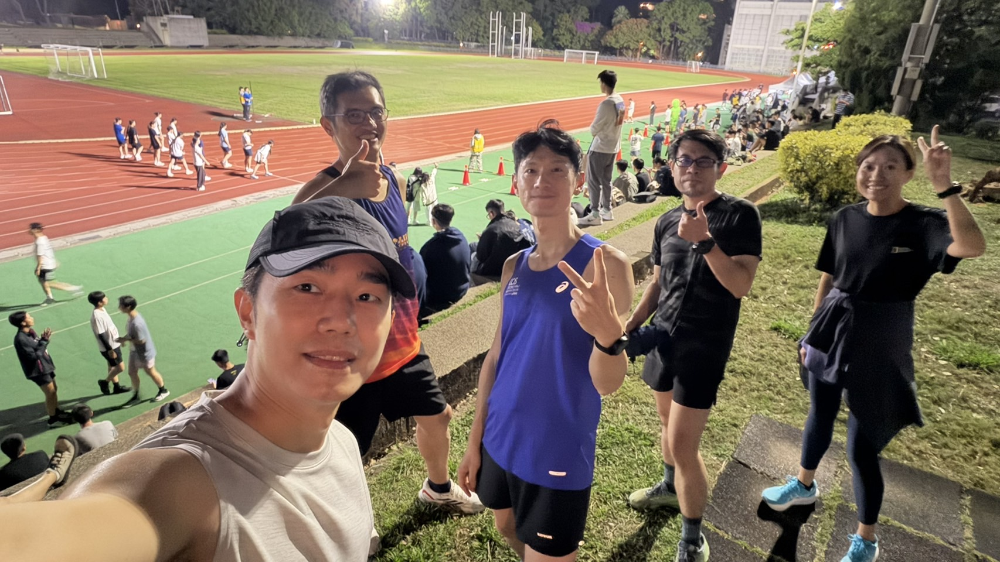

HSINCHU RUNNING COLLECTIVERUNNING / COMMUNITY / CULTURE
YOUR PACE. OUR PLACE.
每一步，
都是新開始。
把日常留在起跑線。
在城市的同一個角落，和 PACE Club 一起向前。
PACE RUNNING CLUB新竹 / HSINCHU

AFTER
HOURS.
HOURS.
不同配速，同一份熱愛。WED / 18:00
走り続けよう
RUN TOGETHER, FEEL BETTER.新竹・每週三・18:00
ABOUT THE CLUB 關於 PACE
不只跑得更遠，
也讓生活多一點節奏。
PACE Club 是一個從新竹出發的跑團。我們相信，跑步的意義不只在速度，而是在一次次出發之間，找到屬於自己的步調。
無論你剛穿上跑鞋，或早已習慣繞著跑道前進，都歡迎一起跑。把每週三的傍晚留給自己，也留給一群喜歡跑步的人。

自己的配速一起的風景每週的約定
THE WEEKLY RUN 每週團練
HSINCHU
新竹交大操場
週三，
操場見。
WEDNESDAY
IS OUR RUN DAY.
WHEN / 時間每週三 18:00
WHERE / 地點新竹交大操場
BRING / 隨身準備跑鞋、飲水，和想出發的心情
活動以現場狀況為準；出發前請留意天候與場地開放情形。
THE NEXT STEP IS YOURS.